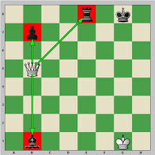

Context
Mon travail
Récap
Le projet Chess a été réalisé dans le cadre de ma troisième année à l'IUT Informatique. L'objectif était de développer un jeu d'échecs en utilisant le framework Vue.js pour la partie visuelle de l'application, et Node.js avec Express pour la partie API. Dans ce projet, nous avons travaillé par binôme, chaque personne étant responsable d'une partie de l'application. La partie visuelle et le fonctionnement du jeu sont inspirés de la plateforme en ligne Chess.com.
Principalement, et contrairement à Chess.com, nous avons conçu un jeu d'échecs à jouer en local, c'est-à-dire que deux utilisateurs jouent sur le même ordinateur. Le site comprend plusieurs pages : une page de connexion, une page pour consulter l'historique des parties, une page affichant le classement (leaderboard) et, bien sûr, une page pour jouer au jeu.
Pour ma part, lors de ce projet, j'ai développé la partie API de l'application, en gérant les utilisateurs, les scores, mais surtout la logique du jeu, notamment la vérification des mouvements possibles, la gestion des fins de partie, etc. Étant déjà familiarisé avec Node.js et Express, la création de l'API n'a pas été complexe. La véritable difficulté résidait dans la conception de l'algorithme du jeu.
En effet, pour la réalisation de l'algorithme du jeu, il fallait anticiper tous les cas possibles de déplacement des pièces, ainsi que la gestion de la mise en échec du Roi.
Pour cela, l'algorithme doit effectuer différentes actions. Dans un premier temps, il vérifie si un pion est en promotion (selon les règles des échecs), puis il procède au déplacement de la pièce. Si le déplacement est valide, l'algorithme vérifie ensuite si le Roi adverse est en échec ou s'il doit se déplacer. Enfin, toutes les actions effectuées lors du mouvement, ainsi que l'état du jeu, sont renvoyées au front-end afin d'assurer une synchronisation parfaite entre le back-end et le front-end.
(Algorithme principal)

Pour conclure, le projet Chess m'a permis d'enrichir mes compétences en algorithmique ainsi que d'améliorer la sécurité d'un jeu en bloquant les actions potentiellement interdites. De plus, j'ai pu acquérir des compétences avec Vue.js, notamment dans la gestion de la relation entre le backend et le frontend.